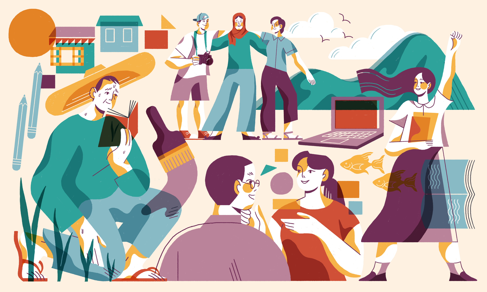
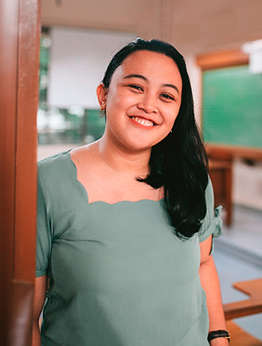
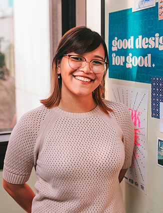
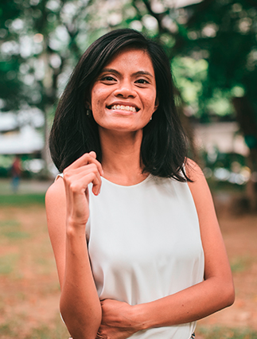
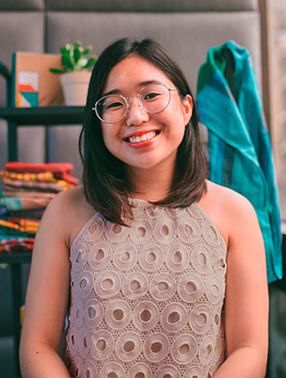
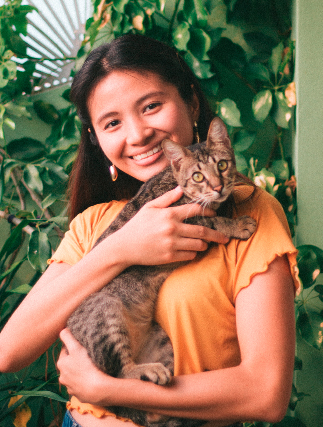
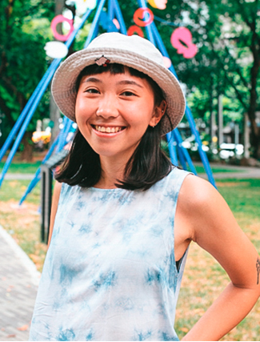
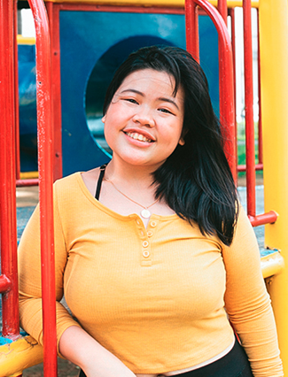
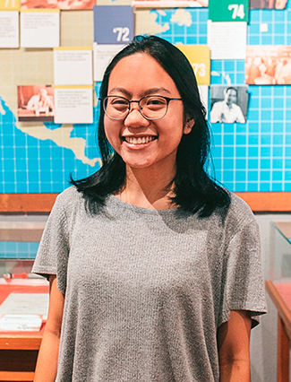
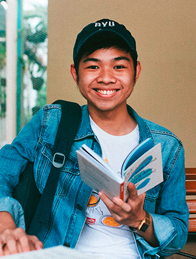

<main class="about">
  <section class="woh-menu">
    <div class="works"><a href="/">Works</a></div>
    <a href="/" class="woh-heart"></a>
    <div class="heart"><a href="/heart" class="-active">Heart</a></div>
  </section>
  <section class="about-hero">
    <div class="about-hero-text">
      <h3>Design for impact</h3>
      <p>Impactful design is rooted in the genuine consideration of complex social realities and personal experiences. We strive to create work that is truly meaningful, from our process all the way to our output.</p>
    </div>
    
  </section>
  <section class="about-process">
    <h5>OUR PROCESS</h5>
    <div>
      <div>
        <h4>Engagement</h4>
        <p>Our process in rooted in forms of community-building, which involve full sincerity, sustained conversation, and professional vulnerability.</p>
      </div>
    </div>
  </section>
  <section class="about-values -with-subheadline">
    <h5>UPHOLDING OUR VALUES</h5>
    <div class="value">
      <h4>Design should always reflect the human experience</h4>
      <p>Works of Heart believes that good design happens when there is a conscious and strategic decision to reflect the brand’s story—when a design is created with a deep understanding of the community’s needs and insights of a human response. </p>
    </div>
    <div class="value">
      <h4>People with the same goal must work together</h4>
      <p>Our goals are simple: we want every Filipino to live a better life. And despite the simplicity of our goals, the path is difficult. The country is a work in progress—but for as long as we share the same goals as the partners we collaborate with it is a path we will always be willing to take.</p>
    </div>
    <div class="value">
      <h4>Beautiful stories must be heard</h4>
      <p>Stories help us connect with each other to navigate life’s complex social problems. Works of Heart was founded on the belief that everyone has a story and no matter how small or seemingly meaningless,  they all deserve to be heard.</p>
    </div>
    <div class="value">
      <h4>Design must be done for good</h4>
      <p>At the heart of everything we do, we design with integrity and strive for truth. Every decision we make and every output we create, we do to leave a positive impact in the lives of our fellow Filipinos. </p>
    </div>
  </section>
  <section class="about-partners -with-headline">
    <div class="headline">
      <h3>Partners as co-creators</h3>
      <p>Together with our partners, we co-design better stories and output in pursuit of a just society.</p>
    </div>
    <div class="partners">
      <div>
        <h6> SOCIAL ENTERPRISES AND BUSINESSES</h6>
        <a href="" target="_blank"></a>
        <a href="" target="_blank"></a>
        <a href="" target="_blank"></a>
        <a href="" target="_blank"></a>
        <a href="" target="_blank"></a>
        <a href="" target="_blank"></a>
        <a href="" target="_blank"></a>
      </div>
      <div>
        <h6>FOUNDATIONS AND CORPORATIONS</h6>
        <a href="" target="_blank"></a>
        <a href="" target="_blank"></a>
        <a href="" target="_blank"></a>
        <a href="" target="_blank"></a>
        <a href="" target="_blank"></a>
        <a href="" target="_blank"></a>
        <a href="" target="_blank"></a>
        <a href="" target="_blank"></a>
        <a href="" target="_blank"></a>
        <a href="" target="_blank"></a>
      </div>
      <div>
        <h6>NGOS AND GOVERNMENT</h6><br/>
        <a href="" target="_blank"></a>
        <a href="" target="_blank"></a>
        <a href="" target="_blank"></a>
        <a href="" target="_blank"></a>
        <a href="" target="_blank"></a>
        <a href="" target="_blank"></a>
        <a href="" target="_blank"></a>
        <a href="" target="_blank"></a>
        <a href="" target="_blank"></a>
      </div>    
    </div>
  </section>
  <section class="about-team -with-headline">
    <div class="headline">
      <h3>Our team</h3>
      <p>We work towards having the creativity, agility, and empathy to keep pursuing better visions for our world.</p>
    </div>
    <div class="team">
      
      <div class="team-desc">
        <h4>Roxy Navarro</h4>
        <h6>Partner, Managing Creative Officer</h6>
        <p>Roxy’s past life included a corporate job while juggling the creation of Works of Heart. She wears many hats but is best in creative direction, being a jill of all trades. She advocates education and social entrepreneurship, believing they are key to achieving social justice in the country.</p>
      </div>
    </div>
    <div class="team">
      
      <div class="team-desc">
        <h4>Joreen Navarro</h4>
        <h6>PARTNER, lead designer for campaigns</h6>
        <p>Joreen’s love for storytelling started with illustrating her own stories and grew into designing stories for social enterprises. She believes in the power of the community and advocates for equal opportunity for all.</p>
      </div>
    </div>
    <div class="team">
      
      <div class="team-desc">
        <h4>Ena Escañan</h4>
        <h6>Creative Officer, Lead Designer for Web</h6>
        <p>Ena has 10 years experience in digital design and web development and has worked in various fields, from the academe to data science. She strives to live a zero-waste lifestyle and advocates for reforestation as a solution to the national climate crisis.</p>
      </div>
    </div>
    <div class="team">
      
      <div class="team-desc">
        <h4>Nikki Solinap</h4>
        <h6>Lead Designer for Branding</h6>
        <p>Nikki started making graphics at age 10 and hasn’t stopped since—her portfolio ranges from posters of her favorite celebrities to school newspapers to brand identity systems. She dreams of a progressive Philippines steered by journalism and the arts.</p>
      </div>
    </div>
    <div class="team">
      
      <div class="team-desc">
        <h4>Dianne Aguas</h4>
        <h6>Junior Designer </h6>
        <p>Dianne’s love for storybooks and her box of 64 Crayola crayons ignited her passion to design and bring empowering stories to life. Her advocacies, children’s rights and education, continue to inspire her to put her heart into her works.</p>
      </div>
    </div>
    <div class="team">
      
      <div class="team-desc">
        <h4>Liz Cabrera</h4>
        <h6>Accounts Officer</h6>
        <p>With a background in business management, Liz has always been drawn to social entrepreneurship and building collaborative partnerships. Her love for local crafts and products inspires her to empower local craftsmen and cultivate appreciation for their work, pushing towards cultural preservation.</p>
      </div>
    </div> 
    <div class="team">
      
      <div class="team-desc">
        <h4>Raffy Borromeo</h4>
        <h6>junior designer</h6>
        <p>An illustrator and designer who has worked in diverse fields for 5 years, Raffy uses her skills as a tool to amplify the voices of those in need of proper representation. She loves animals and the environment, supporting them through her vegetarianism and zero-waste lifestyle.</p>
      </div>
    </div>
    <div class="team">
      
      <div class="team-desc">
        <h4>Isabel Weber</h4>
        <h6>junior designer</h6>
        <p>Inspired by cartoons and picture books, and the different emotions these evoke, Bel strives to create illustrations and tell stories that make people feel. She believes in the importance of self-worth and works for freedom of expression for the repressed. </p>
      </div>
    </div>
    <div class="team">
      
      <div class="team-desc">
        <h4>Paolo Tiausas</h4>
        <h6>Copywriter</h6>
        <p>Pao works as a writer and editor in the local publishing industry. He believes in the capacity of Filipino literature and art education to recreate, shape, and direct positive cultural realities for our country. </p>
      </div>
    </div>
    <div class="team">
      
      <div class="team-desc">
        <h4>Fran De Guzman</h4>
        <h6>Intern</h6>
        <p>Fran’s interest in art and illustration has always been present in her life, beginning with illustrating when she was just a child, looking at books for inspiration. She believes in work that empowers children to reach their full potential, especially when design is used as a medium for this. </p>
      </div>
    </div>
    <div class="team">
      
      <div class="team-desc">
        <h4>Thea Torres</h4>
        <h6>intern</h6>
        <p>Thea journeyed into the arts by experimenting with layout, graphic design, and digital illustration. Currently a multimedia artist, she designs for positive social impact for the underprivileged and advocates for education and press freedom.</p>
      </div>
    </div>
    <div class="team">
      
      <div class="team-desc">
        <h4>Cid Gonzales</h4>
        <h6>intern</h6>
        <p>Cid began illustrating in the many Filipino notebooks his mom would buy for him in bookstores down the corner of their street. He believes that his pursuit of self-growth should start with the things he cares for the most: design and access to quality education. </p>
      </div>
    </div>
    <div class="team -partner">
      <div class="team-desc">
        <h4>Gabby Layugan</h4>
        <h6>partner, marketing</h6>
      </div>
    </div>
    <div class="team -partner">
      <div class="team-desc">
        <h4>Iñigo Arenal</h4>
        <h6>partner, finance</h6>
      </div>
    </div>
    <div class="team -partner">
      <div class="team-desc">
        <h4>Irene Lim</h4>
        <h6>partner, strategy</h6>
      </div>
    </div>
  </section>
  <section class="about-acknowledge -with-subheadline">
    <h5>acknowledgements</h5>
    <p>Our sincerest gratitude to all who have helped build Works of Heart in the past and present. </p>
    <ul>
<li title="for doing copy, social media,  project support, and all the other things we ask her help with">Jamie Navarro</li>
<li title="for managing our accounting and govt-related requirement">Renee Navarro</li>
<li title="for designing and leading  campaigns">Kyle Sy</li>  
<li title="for designing publications and campaigns">Chana Garcia</li> 
<li title="for designing brands, especially for creating the first version of our company logo">Kitkat Carmona</li>
<li title="for being one of our first full time designers">Donn Rae Chua</li>
<li title="for being one of our first web designers">Therese Valmonte</li>
<li title="for developing more than half of our website projects">Mark Cinco</li>
<li title="for being one of the first people who said yes to Works of Heart">Jiah Margallo</li>
<li title="for being one of our first designers">Mae Tumang</li>
<li title="for being one of our first designers">Dom Ramos</li>
<li title="for being our first legal consultant and drafted our first MOA">Colene Arcaina</li>
<li title="for being a social media consultant">Nile Villa</li>
<li title="for being one of our first part-time designers">RJ Santillan</li>
<li title="for being one of our first part-time designers">Stef Tran</li>
<li title="for being one of our first part-time designers">Nikko Pascua</li>
<li title="for being one of our first part-time designers">Ysa Calinawan</li>
<li title="for being one of our first part-time designers">Zea Flores</li>
<li title="for being one of our first part-time designers">Jeki Ona</li>
<li title="for being our first finance officer">Jessa Hontiveros</li>
<li title="for being our first marketing officer">Therese Larroza</li>
<li title="for once managing all our video related projects and business development ">Angelo Sison</li>
<li title="for being one of our co-founders and a source of Works of Heart’s core vision">Pam Llaguno</li>
<li title="for helping us push the boundaries of our web technology">Steve Samson</li>
<li title="for being one of our first part-time illustrators">Renee Arabia</li>
<li>-</li>
<li><em>Past Interns</em>
<li>Sofia Trinidad</li>
<li>Inya de Vera</li>
<li>Diana David</li>
<li>Charmaine Yu</li>
<li>Carmela Biso</li>
<li>Coleen de Luna</li>
<li>Joan Lao</li>
<li>Blew David</li>
<li>Kristen Uy</li>
<li>Rico Laguilles</li>
<li>Patty Pilapil</li>
<li>Bea Quisimbing</li>
<li>Erika Macarandang</li>
<li>Azelle Caguioa</li>
<li>Marje Nepomuceno</li>
<li>Richard Mercado</li>
<li>Monica Manalo</li>
<li>Monica Recto</li>
<li>Selena Herrera</li>
<li>Valerie Jiongco</li>
<li>Alyssa Fernandez</li>
<li>Janine Teng</li>
<li>Nicca Idian</li>

    </ul>
  </section>
</main>
  {% include footer.html %}
